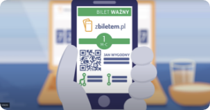
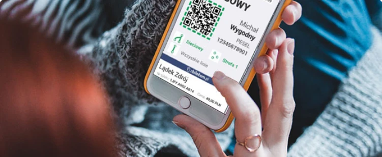
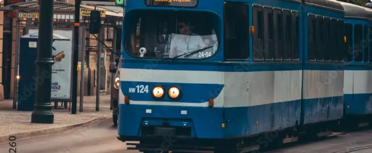

Rozumiemy jak uciążliwe bywa zastanawianie się na przystanku autobusowym, jak kupić bilet.
Wiemy jak pod górkę bywa w kolejce do kasy lub biletomatu. Naprawdę. Mieliśmy te same problemy.
Dlatego stworzyliśmy aplikację, która ułatwi Ci życie gdy jesteś na mieście, w podróży.
zbiletem to najprostsza aplikacja do kupowania biletów komunikacji miejskiej.
Jeśli jeździsz regularnie, docenisz wygodę biletu miesięcznego w aplikacji.
Jeżeli korzystasz z transportu publicznego tylko od czasu do czasu,
szybko kupisz swój bilet 3 kliknięciami zawsze gdy go potrzebujesz.
Wybierz swój bilet w aplikacji
Zapłać w kilka sekund
Podróżuj swobodnie

Najprostszy sposób na bilety
Możesz zapomnieć o kolejkach do biletomatów czy godzinach otwarcia kas.
Z biletem w smartfonie będziesz podróżować wygodniej. I nigdy nie zgubisz biletu.
Możesz też kupić bilet okresowy dla swoich bliskich w sklepie internetowym. .

O biletach w aplikacji
Liczba biletów kupowanych w aplikacjach mobilnych stale rośnie.
W appce zbiletem kupisz je najwygodniej i najszybciej. Po wybraniu metody płatności przy
pierwszym zakupie, kolejny bilet kupisz 3 kliknięciami w kilka sekund.
Aktywny bilet w aplikacji możesz okazać do kontroli nawet off-line. Niezależnie czy korzystasz z
ZTM,
MPK czy MZK w Twoim mieście, aplikacja zbiletem to dla Ciebie idealny kompan w podróży.
O tej aplikacji
Aplikacja zbiletem jest polecana przez 70% użytkowników. Wiesz dlaczego?
Rozwijamy ją od 2015 roku, słuchając jej użytkowników, dzięki czemu jest tak doceniana.
Działamy w ponad 60 miastach w Polsce. Każdego dnia tysiące osób podróżuje wygodniej z biletem
miesięcznym w tej aplikacji. W każdym miesiącu użytkownicy apki zbiletem kupują setki tysięcy
biletów
czasowych i jednorazowych. Z tą aplikacją nie musisz się martwić czy biletomat będzie działał,
możesz mieć go zawsze w swojej kieszeni.

Dla miast i operatorów
zbiletem to rozwiązanie dla miast, gmin i operatorów publicznego transportu
zbiorowego.
Dostarczamy kompleksowe rozwiązanie do sprzedaży, aktywacji i kontroli biletów mobilnych.
Cały system obejmuje: aplikację mobilną użytkownika, sklep internetowy, panel zarządczy,
aplikację kontrolerską oraz szereg API do współpracy z rozwiązaniami innych dostawców.
Aplikacja zbiletem może być wdrożona w warunkach dużego jak i małego miasta w ciągu kilku
tygodni. To tańszy w porównaniu z innymi, wymagającymi obsługi personelu lub drogiego sprzętu,
kanałami dystrybucji biletów na transport publiczny.
Wśród naszych rozwiązań znajdziesz także pierwszy w Polsce system aktywacji biletów
mobilnych w oparciu o kody QR w pojazdach.
Twoje bilety mogą się znaleźć w aplikacji zbiletem.pl już za kilka tygodni. Napisz
na kontakt@zbiletem.pl aby umówić spotkanie lub rozmowę.
Często zadawane pytania
Najczęściej przyczyną braku biletu w aplikacji jest błędny numer telefonu podany
podczas zakupu. Jeśli nie widzisz swojego biletu, skontaktuj się z nami przez e-maila
na adres kontakt@zbiletem.pl lub media społecznościowe
podający poprawny numer telefonu i adres e-mail podany podczas zakupu biletu. Poprawimy numer
dla Ciebie i damy znać.
Dodaną kartę płatniczą można usunąć podczas kupowania biletu jednorazowego. Trzeba kliknąć wtedy
w "wybierz metodę płatności" i kiedy rozwinie się lista, na której również widnieje Twoja karta,
wystarczy przesunąć ten kafelek w lewo. Następnie kliknąć w czerwony krzyżyk, a metoda płatności
zostanie usunięta.
W większości miast sam zakup biletu jest jego aktywacją i nie musisz robić nic więcej. Inaczej
jest w Warszawie, gdzie bilety jednorazowe i czasowe trzeba aktywować poprzez skanowanie kodu
QR, który znajdziesz na specjalnych naklejkach w pojazdach lub na bramkach w metrze.
Bilety okresowe aktywuje się tylko w Rybniku i Jastrzębiu-Zdroju, przy każdym przejeździe.
W pojazdach znajdują się naklejki zbiletem, na których umieszczony jest kod QR i tag NFC.
Możesz zeskanować kod na naklejce lub zbliżyć do niej telefon z NFC. Wtedy bilet staje się
aktywny
i zmieni kolor. W innych miastach, bilety okresowe aktywują się zgodnie z wybraną datą
początkową
i/lub godziną zakupu
Niestety nie. zbiletem i Migawka MPK to odrębne systemy. Pamiętaj jednak że zbiletem oficjalnie
działa w Łodzi i bilety w apce dają Ci takie same uprawnienia jak te na karcie plastikowej
Migawka. Zachęcamy więc do kupna kolejnej migawki w naszej apce.
Bilet okresowy zakupiony poza aplikacją/stroną internetową zbiletem, nie może zostać
przeniesiony do aplikacji. Zachęcamy do zakupu kolejnego biletu przez naszą apkę.
Niestety nie. Bilet okresowy jest przechowywany w aplikacji, więc przy kontroli jest ona
niezbędna.
Na adres mailowy wysyłamy potwierdzenie zakupu biletu, które nie jest traktowane jak aktywny
bilet.
Wyjątkiem jest Słupsk, gdzie potwierdzenie biletu działa jak aktywny bilet.
Bez obaw, wszystko da się poprawić. Jeśli przy zakupie biletu wkradł się błąd w danych pasażera
albo została zaznaczona błędna data rozpoczęcia biletu, napisz do nas e-mail na adres
kontakt@zbiletem.pl lub znajdź nas w social mediach.
Podaj poprawne dane a my się tym zajmiemy i damy Ci znać.
Zwroty biletów są możliwe zgodnie z regulaminem zwrotów, który obowiązuje w danym mieście.
Zajrzyj na zbiletem.pl/zwrot i sprawdź jak jest w Twoim mieście.
Jeśli chcesz zwrócić swój bilet napisz do nas na kontakt@zbiletem.pl.
Czasami transakcje zakupu są anulowane np. z uwagi na zbyt długi czas procesowania.Wtedy bilet nie jest generowany,
ale Twój bank może chwilowo pokazywać obciążenie rachunku. W takiej sytuacji zwrot pieniędzy powinien być zrobiony automatycznie.
Poczekaj kilka godzin lub następnego dnia sprawdź swój rachunek. Jeśli nie otrzymasz zwrotu, koniecznie skontaktuj się z nami na kontakt@zbiletem.pl
podając numer telefonu i datę transakcji. Wyjaśnimy i na pewno środki wrócą do Ciebie.
Prosimy o numer PESEL pasażera, aby jednoznacznie określić właściciela biletu imiennego i zidentyfikować również podczas kontroli.
Dzięki temu, nawet jeśli masz problem z telefonem, lub rozładuje Ci się bateria, możesz spokojnie podróżować ponieważ w części miast
możemy sprawdzić ważność Twojego biletu właśnie poprzez numer PESEL. Twoje dane są bezpieczne i przetwarzane wyłącznie w celu obsługi
klienta i realizacji naszych zobowiązań wobec Ciebie. Kontroler nie ma dostępu do Twoich danych poza momentem kontroli.
W niektórych miastach, jeżeli rozładowała Ci się bateria w telefonie, pokaż kontrolerowi dokument tożsamości z numerem PESEL.
To wystarczy żeby sprawdzić czy masz ważny bilet. Kontrola biletów poprzez numer PESEL nie może być zrealizowana w miastach:
Rybnik, Jastrzębie -zdrój, Gdańsk, Gdynia, Sopot, Wejherowo, w pociągach przewozów regionalnych w Łodzi.
Pamiętaj też, że w wielu autobusach i pociągach są gniazda USB więc dobrze mieć przy sobie ładowarkę na czarną godzinę.
Chcesz korzystać z apki, ale Twojego miasta jeszcze nie ma na naszej liście? Napisz do nas, jakie miasta powinny się u nas znaleźć, a my zrobimy wszystko aby tak się stało :).
MASZ INNE PYTANIE?
Napisz do nas nas e-mail na kontakt@zbiletem.pl. Możesz skorzystać z tego formularza. Znajdziesz nas też w mediach społecznościowych. Zwykle odpowiadamy bardzo szybko.
Nasi Partnerzy
Współpracujemy z miastami, gminami i operatorami transportu publicznego aby dostarczać
użytkownikom rozwiązania do wygodniejszego podróżowania. Wśród naszych partnerów znajdziesz zarówno duże
miasta i aglomeracje jak i mniejsze ośrodki czy spółki.